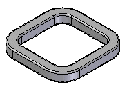
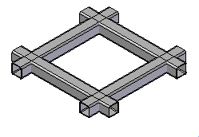
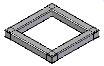
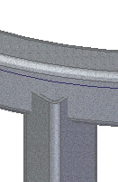
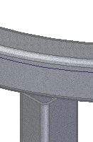
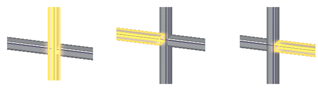
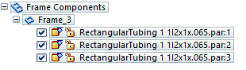
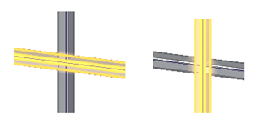
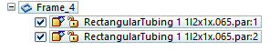

Frame Options dialog box
- Preferred Frame Orientation
-
Specifies how you want to orient the frame. You can only change the plane orientation when you are creating the mode. Because of the dependency of the subsequent features may have on the original orientation, you cannot edit the orientation after it has been created. If you need to change the orientation, you should delete the frame, change the orientation, and then recreate the frame.
- Coordinate System
-
Specifies the coordinate system you want to use to select the preferred plane. The default is the Base coordinate system, but you can specify any coordinate system in the document.
- Preferred Plane
-
Specifies the preferred plane to orient the cross section. The option only applies when the selected entities are located in more than one plane. If all of the selected entities are on the same plane, then that plane is the preferred plane and this option is ignored.
- Orientation
-
Orients the frame cross section to a bisector plane or in a radial direction.
- Preview
-
Previews the selections you make to give you a better understanding of the orientation you have selected.
- Corner Treatment Options
-
Specifies how you want to apply corner treatment to the frame. The availability of these options depends on the number of segments at a given vertex.
For a vertex with exactly two orthogonal segments, you can apply mitered, butted, or no corner treatment. If you select no corner treatment, you can then apply a radius or extend the corner.
For a vertex with exactly two non-orthogonal segments, you can apply mitered or no corner treatment. If you select no corner treatment, you can then apply a radius or extend the corner. If you apply a radius treatment, the result is one body.
For a vertex with three or more non-orthogonal segments, you can apply mitered or no corner treatment.
- Apply Corner Treatment
-
Specifies the type of corner treatment to be applied to the adjacent frame components. The corner treatment can be:
- Miter
-
Applies a mitered end condition to the adjacent frame components.

- Preferred Plane
-
Miters the frame corners parallel to the preferred plane. You can specify an XY plane (1), a YZ plane (2), or an XZ plane (3).

- Butt
-
Butts one frame member into another frame member that is parallel to the preferred axis.

- Preferred Axis
-
Butts one frame member into another frame member that is parallel to the preferred axis. You can specify the preferred X axis (1), the preferred Y axis (2), or the preferred Z axis (3).

- Miter (Legacy)
-
Applies a mitered end condition to the adjacent frame components. You can use this option if there are more than two segments at a given vertex. This option is only available when editing frames created prior to ST7.
- Butt 1 (Legacy)
-
Applies a butt end condition to adjacent frame components in which the longer segment is butted up against the shorter segment. You cannot use this option if there are more than two segments at a given vertex. This option is only available when editing frames created prior to ST7.
- Butt 2 (Legacy)
-
Applies a butt end condition to adjacent frame components in which the shorter segment is butted up against the longer segment. You cannot use this option if there are more than two segments at a given vertex. This option is only available when editing frames created prior to ST7.

- Apply radius
-
Applies a specified radius to the adjacent frame components.

- Extend frame component
-
Extends the frame component ends by the value specified in the box.

- No Corner Treatment
-
Applies no end conditions to the adjacent frame components. You can use this option if there are more than two segments at a given vertex.

- Set weld gap value
-
Adds a weld gap to the frame ends at the corners and at the ends, extended to a plane, face, or body.
- Clear Overrides
-
Clears any overridden corner treatment at the various ends of the frame.
- Options
-
Expands or retracts the display of options on the dialog box.
- Frame Component Location
-
Specifies the source location of the frame component.
- Browse for component
-
Specifies that the frame component is located in a folder, either locally or on the network.
- Select from Standard Parts Library
-
Specifies that the frame component is located in a standard parts library.
Note:The standard parts database delivered with Solid Edge does not contain frame components. If the currently configured standard parts database contains only the free components, you must select the Local/Network Parts option.
- Coping on non-mitered joints
-
Applies coping trim to adjacent frame members that contain non-mitered end conditions.

If you deselect the option, the frame member trims to a plane.

- Automatic frame component positioning
-
Automatically positions the frame components for all frame features based on the adjacent frame members.
- Ignore entity if frame already exists
-
If any frame member is already created on the entity selected in the Select Path step, then that entity is ignored when creating the frame.
- Split intersecting frames
-
Splits all intersecting frames.
In the following example, with the option selected, the intersecting frames are split into three separate parts

and an entry for each of the three parts appears in PathFinder.

In the following example, with the option not selected, the intersecting frames are not split

and an entry for the two parts appears in PathFinder.

- Single frame for collinear segments
-
When this option is on, a single frame is created spanning all collinear connected segments. When this option is off, a frame is created for each path segment.
- Single frame for tangential segments
-
When this option is on, a single frame is created spanning all tangential connected segments. When this option is off, a frame is created for each path segment.
- Recently used component list
-
Specifies the maximum number of entries to include in the list of recently used components.
- Show this dialog box when command begins
-
Displays the dialog box every time you select the command. If you do not want to display the dialog box when you select the command, clear this option.
How do I
Add a custom frame componentCreate a structural frame
Save a structural frame component
Edit frame end conditions
Edit a frame cross section
Create a frame end cap
Edit a frame end cap
Trim or extend a frame
Create frames with weld gaps
Learn more
Structural frame design workflowSaving frame components
Saving structural frame components
Look up more details
Frame commandFrame command bar
Creating a structural frame
Adding members to a frame
Edit End Conditions command
Edit Cross Sections command
Frame snap points
Frame End Cap command
End Cap Options dialog box
Frame Origin command
Trim/Extend command
Trim/Extend command bar
Adding custom frame components to a local library
Creating a custom structural frame component: best practices
Defining hole locations in a frame